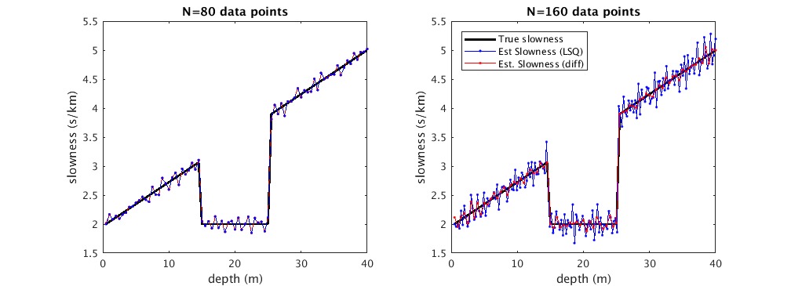

db = 40e-3;
st = 2;
sb = 5;
dd = 0.5e-3;
n = 80;
dpt = linspace(dd,db,n)';
m = 80;
s = linspace(st,sb,n)';
s((3/8)*n:(5/8)*n) = 2;
G = tril(ones(m,n).*0.5);
d1 = G*s;
ns = rand(m,1).*0.1;
dns1 = d1+ns;
slsq1 = inv(G'*G)*G'*dns1;
sdd1 = diff(dns1)/0.5;
n = 160;
dpt2 = linspace(dd,db,n)';
G = tril(ones(m,m).*0.5);
G = reshape([G(:) G(:)]',2*size(G,1), []);
for i = 1:2:length(G)
G(i,(i+1)/2) = .25;
end
d = G*s;
ns = rand(n,1).*0.1;
dns = d+ns;
slsq = inv(G'*G)*G'*dns;
sdd = diff(dns)/.25;
figure('units','normalized','outerposition',[.2 .2 .7 .5]); hold on;
subplot(1,2,1); hold on; box on;
plot(dpt*1e3, s, '-k', 'linewidth', 2);
plot(dpt*1e3, slsq1, '-r.');
plot(dpt*1e3, [s(1); sdd1], '--b.');
xlabel('depth (m)');
ylabel('slowness (s/km)');
title('N=80 data points');
subplot(1,2,2); hold on; box on;
plot(dpt*1e3, s, '-k', 'linewidth', 2);
plot(dpt2*1e3, [s(1); sdd], '-b.');
plot(dpt*1e3, slsq, '-r.');
xlabel('depth (m)');
ylabel('slowness (s/km)');
title('N=160 data points');
legend('True slowness', 'Est Slowness (LSQ)', 'Est. Slowness (diff)', ...
'location', 'northwest');
